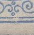
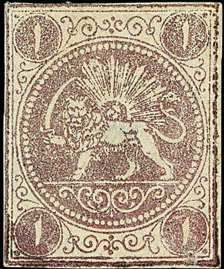
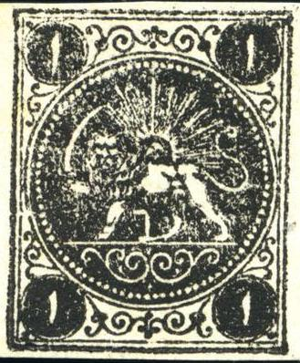
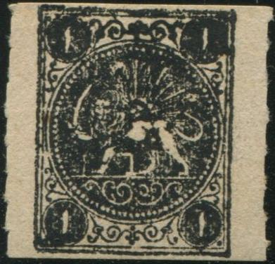
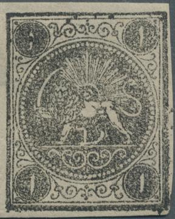
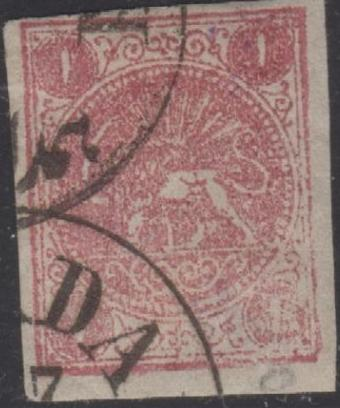
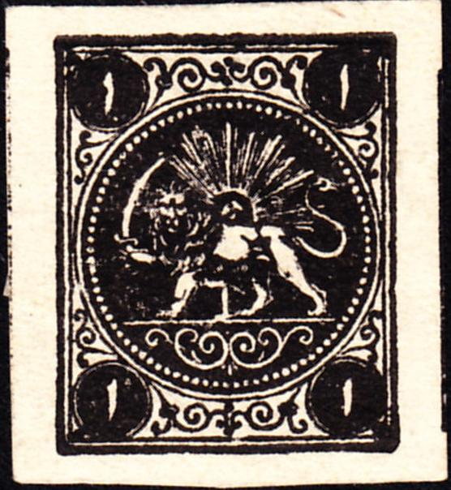
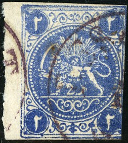

PERSIA 1868 issue Types, 1 ch and 2 ch
Currency: 1 Toman = 10 Kran = 200 Chahi (or
Shahi), after 1881: 1 Kran = 100 Centimes
Return To Catalogue -
Persia 1868 issue, types, part 2, 4 ch and
8 ch - Persia 1868 issue, types, part
3 - Persia (Iran) 1868 issue - Persia 1868 issue, forgeries, part 1 - Persia 1868 issue, forgeries, part 2 - Persia 1868 issue, forgeries, part 3
Note: on my website many of the
pictures can not be seen! They are of course present in the
catalogue;
contact me if you want to purchase the catalogue.
More information about stamps from Persia, forgeries etc. can
be found on: http://www.persi.com/fakes/fakes/fake.html (link no
longer active), http://fuchs-online.com/iran/lions-03.htm or
http://www.iranphilatelic.org/scams.htm. Also the book of
Friedrich Schuller 'Die Persische Post und de Postwerthzeichen
von Persien und Buchara' has much information.
First stamps were printed in rows of four stamps,
later also blocks of four stamps were printed.
The first stamps (without numerals between the
legs) were printed in four types. These types were based on the
five types of the Barre essays (one
type was not used). Pairs or other multiples do not seem to exist
for the first issue? Unfortunately, neither the book of Schuller
nor the websites http://fuchs-online.com/iran/lions-02.htm and
http://fuchs-online.com/iran/lions-03.htm gives any information
about the types. This is what I could find out about the types of
the first stamps:
The 1 ch lilac was made from 4 out of the 5 Barre
cliches, i.e. only cliches 2, 3, 4 and 5 of the Barre essays were
used.

If I'm well informed, this type of the 1 ch lilac was based on
the second type of the Barre essays. In my view it has a scratch
through the line below the lion. Also, the inner left frameline
has a break in the bottom part, just above the bottom left
scroll. The horizontal line has its left part missing? Also a 1
ch black (type D) based on this type. And a 1 Kran red stamp.
This type of the 1 ch violet (presumably based on the third type
of the Barre essays), appears to have a broken left bottom
corner. Note that there is a smudge in the pearl circle at 5
o'clock. Also a 1 ch black type A based on this type.








In the type of the 1 ch (based on the fifth type of the Barre
essays, see first images), there is a weakness in the most inner
of the two outer framelines at the central bottom part. The 1 ch
black of this type also has this weakness (third and fourth
image), as well as one of the official reprints (last image).
Also a 1 Kran red stamp.
In my opinion, this Barre essay (first stamp) has a small dent in
the circle just above the third pearl (when the first pearl is
counted as the one being right on top of the vertical sun ray).
The 1 c lilac type based on this Barre essay has a weakness in
the right bottom scroll and also a break in the line just beneath
it (the inner bottom frameline). Also two 1 ch black stamps (type
B) based on this type. The 1 ch black also appears to (not
always?) have a break in the left frameline (3/4 up). Also there
is a white patch under the paw holding the sword (this is also
already vaguely visible in the 1 ch lilac stamps).
The four types in a row of 4 1 ch black stamps (as printed)
The 2 ch green was made from 4 out of the 5 Barre
cliches, i.e. only cliches 1, 3, 4 and 5 of the Barre essays were
used.

2 ch Barre type 1. Next to it most likely a 2 ch green based on
this type
2 ch Barre essay Type 3, with bottom left corner shaved off. Next
to it most likely a 2 ch green based on this type (I'm not 100%
sure). In my view, the pearl at 4.30 o'clock is printed badly (or
even missing) Next to it Type C of the 2 ch blue stamp, all based
on the same Barre essay.
2 ch Barre type 4. It has a white flaw in the rays of the sun
just to the right of the most vertical ray. This later became
Type B of the 2 ch black and blue (with a very small
"2" between the legs of the lion).


2 ch green stamp. In this type, a break is present in the circle
surrounding the central design, just right to the bottom central
ornament (this break is already present in the corresponding
original Barre essay type 5, see first and second image). This
corresponds to Type A of the 2 ch blue stamps shown later on. The
bottom left corner became more and more damaged during this
stage. Apparently Boital took this stamp-type to Paris to order
reprints (last four images, even perforated Boital reprints
exist).
Persia 1868 issue, types,
part 2, 4 ch and 8 ch
Copyright by Evert Klaseboer


{kind=link}